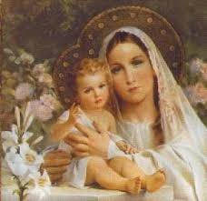

" NOSSA SENHORA ACHIROPITA"

"NOSSA SENHORA COM SEUS MÚLTIPLOS NOMES, SEMPRE QUER MANIFESTAR O SEU AMOR SINCERO E PERENE, A TODOS OS SEUS FILHOS QUE BUSCAM A SUA TÃO PRECIOSA E FIEL INTERCESSÃO JUNTO AO DEUS DA VIDA"
=ÍNDICE=
 -"NOSSA SENHORA
ACHIROPITA E A IGREJA"
-"NOSSA SENHORA
ACHIROPITA E A IGREJA"
-"FESTA DE NOSSA
SENHORA ACHIROPITA"